My Projects
Proyek Tanya Jawab PDF putusan pengadilan dengan model API OpenAI
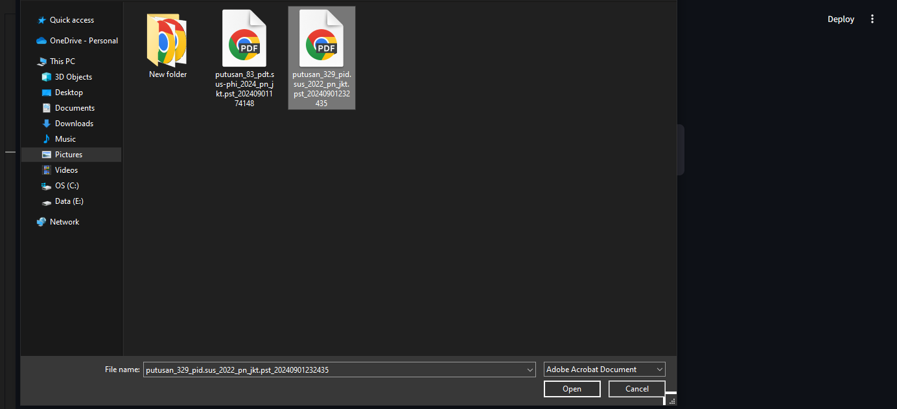
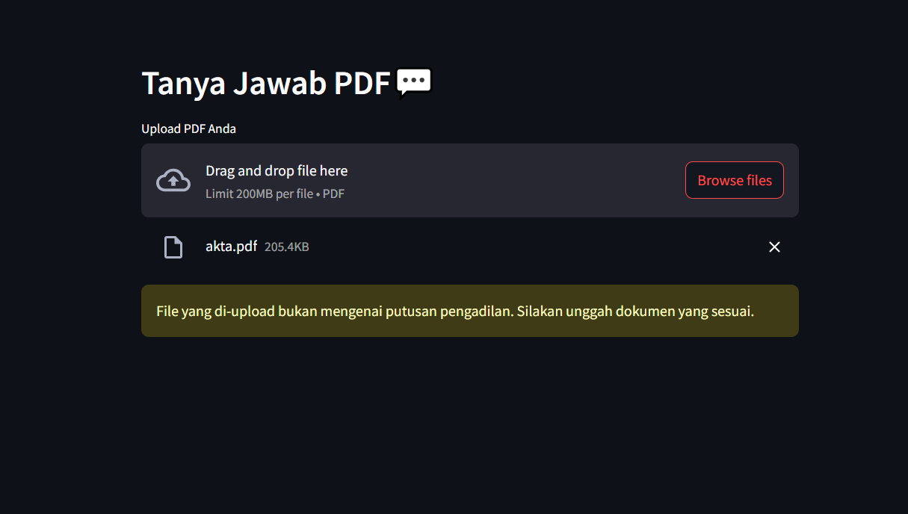
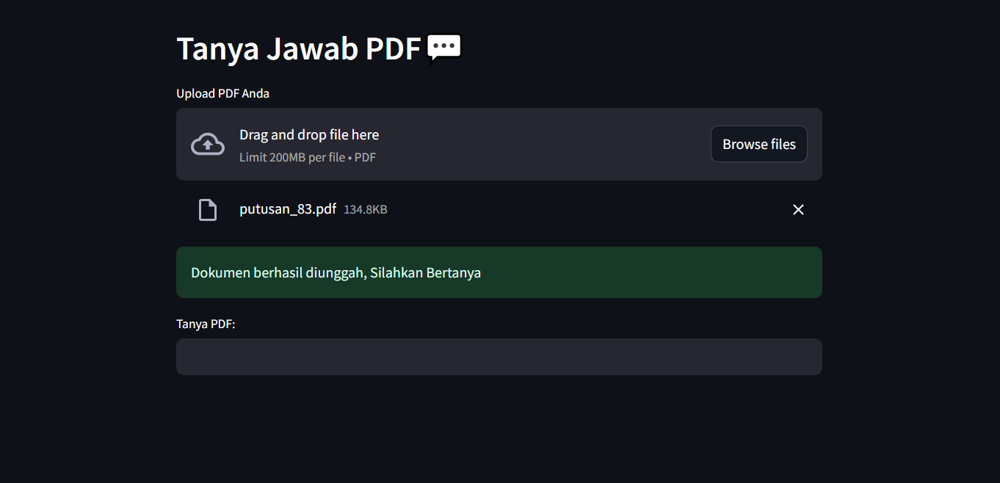
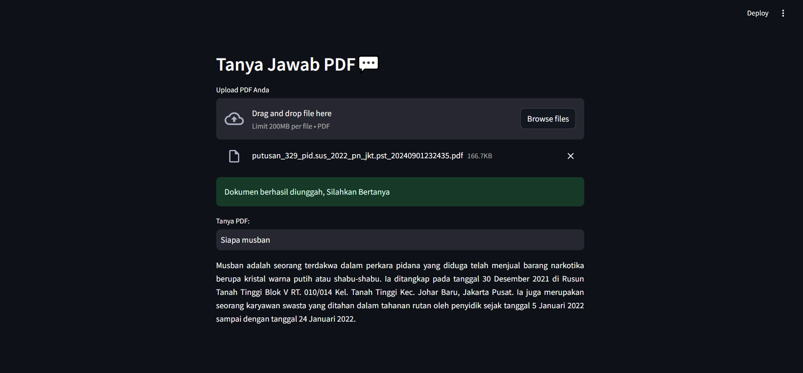
Proyek ini melibatkan pengubahan berkas PDF menjadi teks menggunakan PyPDF2, memvalidasi teks untuk menentukan relevansi dokumen, dan mengubahnya menjadi potongan-potongan kecil menggunakan CharacterTextSplitter untuk penyematan dan relevansi, lalu mengubahnya menjadi penyematan numerik menggunakan OpenAIEmbeddings dan basis data vektor FAISS untuk analisis data cepat.
View on GitHubProyek Twitter clone
Aplikasi ini adalah kloning dari Twitter atau menyerupai aplikasi Twitter yang dibangun menggunakan Flutter dan Appwrite, menawarkan fitur-fitur serupa dengan Twitter asli, kecuali fitur pesan langsung (direct message).
View on GitHubProyek AI
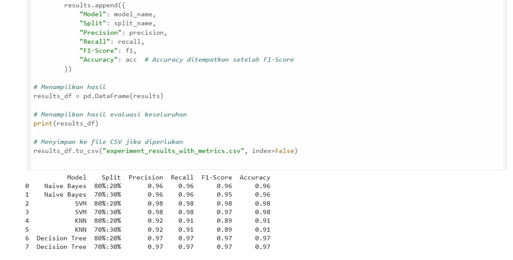
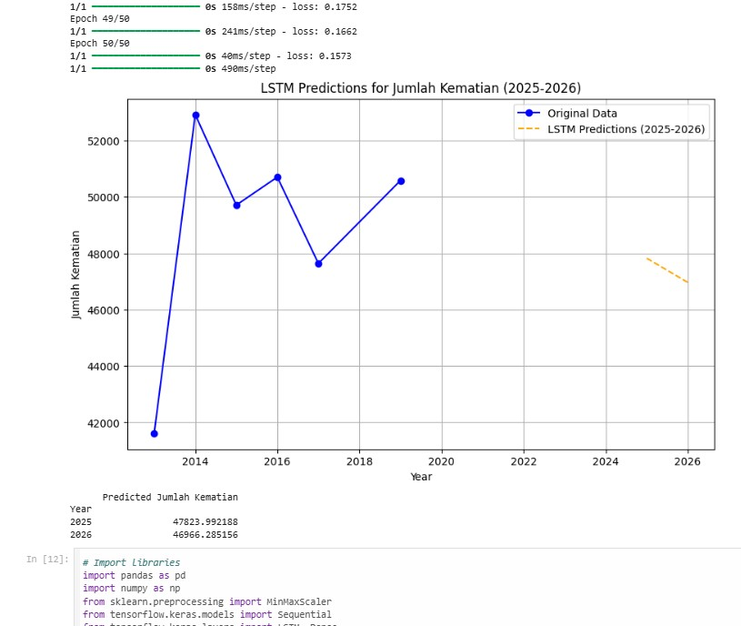
Tujuan proyek tersebut dilakukan dalam menyelesaikan tugas mata kuliah AI, NLP dan Machine Learning
View on GitHubText Summary
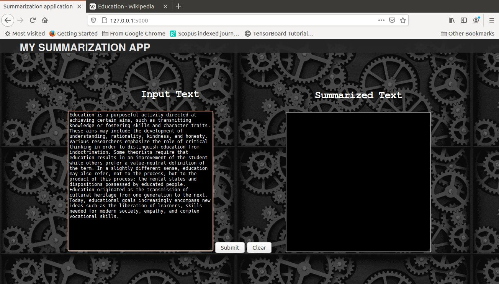
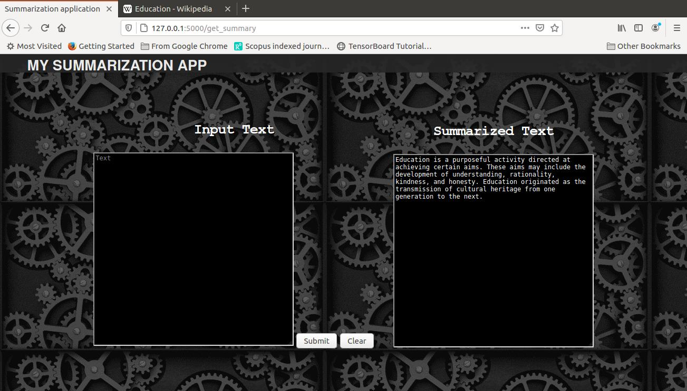
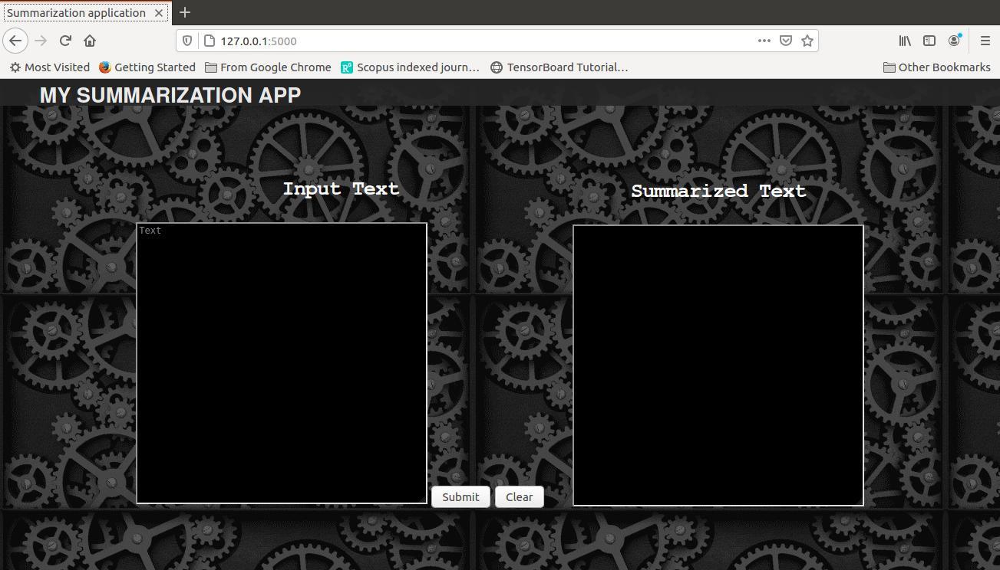
Proyek ini adalah aplikasi web untuk melakukan ringkasan teks yang menggunakan teknik NLP dan model machine learning yang dikerjakan dengan tim atau kelompok
View on GitHubProyek Game Mobile dengan menggunakan unity


Proyek ini dikerjakan dalam memenuhi tugas mata kuliah mobile programming
Proyek Game Tetris menggunakan pemrograman Java
.png)
.png)
Proyek ini menggunakan bahasa pemrograman java sebagai sistem dari game tetris dengan menggunakan asset immage sebagai pola dari game
View on GitHubProyek UI & UX order food
.png)
.png)
Proyek ini dilakukan dalam tim atau kelompok dalam memenuhi tugas akhir mata kuliah technopreneurship yang dirancang dengan Figma
Proyek WEB programming UTS pencari pekerjaan
.png)
.png)
Proyek ini dilakukan dengan tim dengan menyelesaikan tugas akhir atau proyek untuk web programming dengan model pencari pekerjaan
View on GitHubAnalisis data covid 19 dengan python
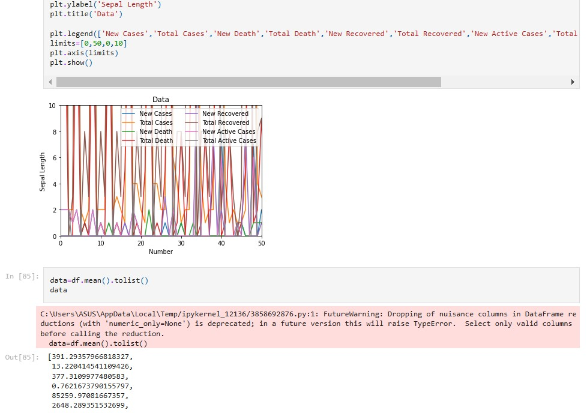
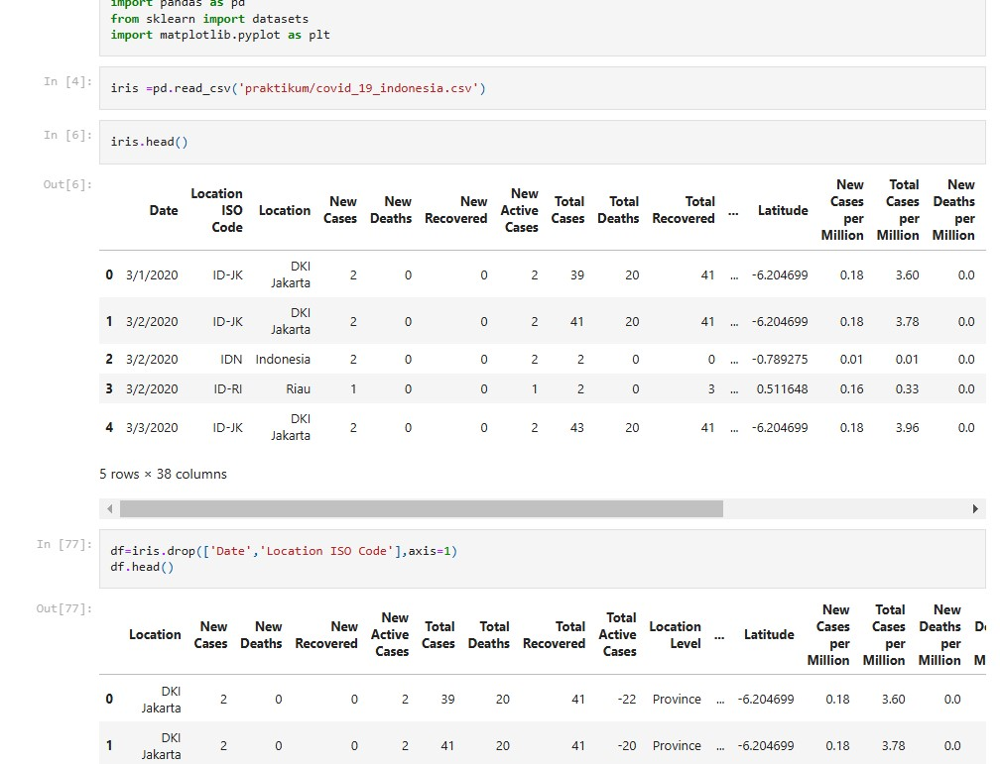
Analisis ini dibuat untuk tugas akhir big data
View on GitHub